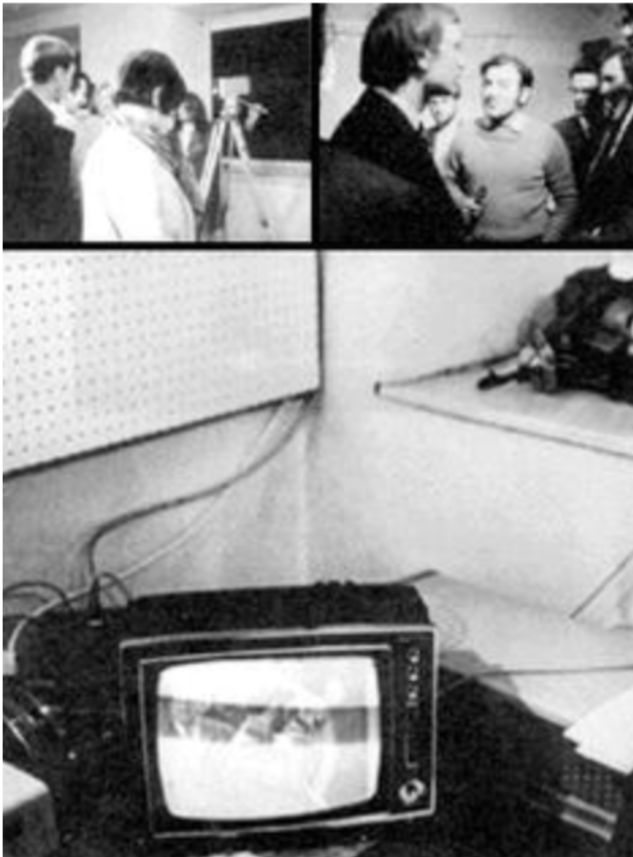

EXPANSIÓN: UNA NUEVA FORMA DE COMUNICAR
PAPER |
PROYECTO |
VINCULACIÓN |
CONCLUSIÓN |
Diseño, Tecnología y Sociedad.
Página Web por: Helena Milosevic, Renata Haberle, Sophia Goldsack, Camila Naylor, Nicolás Navia, Ignacia Cardemil, Dolores Artigas, Teresa Sanchez.
Profesores: Daniela Moyano, Ricardo Vega.
Ayudantes: Verónica Gatica, Ariana Cisternas, Emilia Ramírez, Paula Santa María.
Expanded Cinema, Video and Virtual Environments
Por Peter Wibel

Nace en 1944 en Ucrania.
Post-artista conceptual, curator y teórico sobre nuevos medios
Pionero del arte digital y por su trabajo interdisciplinario en los campos de la tecnología, la ciencia y la política, generando gran influencia en la escena mundial del arte realizado con medios digitales.
Sus obras son una reflexión sobre la sociedad actual y sus problemas. En sus exposiciones aborda temas como la globalización, la tecnología y la cultura contemporánea y desafía al espectador a cuestionar su relación con la sociedad y la cultura.
Expanded Cinema, Video and Virtual Environments
Texto escrito por Peter Weibel que aborda la evolución del cine y las artes audiovisuales en relación con el surgimiento de la tecnología digital y las nuevas formas de experimentación visual.
El texto explora cómo el cine tradicional ha evolucionado hacia formas más amplias e inmersivas de expresión, como el videoarte y los entornos virtuales. Weibel analiza cómo la introducción del video como medio artístico permitió a los artistas expandir los límites de la narrativa y la percepción visual, rompiendo con las convenciones tradicionales del cine.
Además, el autor examina la influencia de la tecnología digital en la creación de entornos virtuales y cómo estos espacios digitales han transformado la experiencia del espectador, brindando la posibilidad de una inmersión total en la obra de arte.
Ideas relevantes:
- Rompe con las convenciones tradicionales del cine a través del videoarte.
- Influencia de la tecnología digital en la creación de entornos virtuales.
- Transformación de la experiencia del espectador mediante la inmersión en entornos virtuales.
- Ampliación de las posibilidades creativas y la experiencia del espectador gracias a la tecnología digital.
El paper se basa en la exploración y expansión de las posibilidades del arte y el cine, de una manera menos tradicional explorando pantallas, interacción con el espectador, el video y entornos virtuales inmersivos.
Proyecto COCA
Creado por SOSO
SOSO
https://www.sosolimited.com/
Sosolimited es una empresa que reúne diseñadores/as, arquitectos/as , ingenieros/as y artistas con el fin de crear experiencias visuales creativas e interactivas que relacionan el arte, la tecnología, comunicaciones y el diseño.
“Nuestra visión es un mundo en el que el diseño y la tecnología trabajen juntos para desbloquear nuestro potencial creativo colectivo y acercarnos más a nosotros mismos, a los demás y al planeta.” (soso)
COCA
COCA es un centro comunitario multidisciplinario de artes en St. Louis, en donde implementaron un dinámico muro de reconocimiento que canaliza la energía y el movimiento de las personas en la comunidad.
La experiencia permite explorar y crear con sus cuerpos, dirigiendo el movimiento y el color de ondas fluidas de casi un millón de partículas con sus movimientos, dando vida a las pantallas.
Vinculación
Puntos en común
Tanto el paper como el proyecto COCA comparten varios puntos en común en relación a la proyección, la nueva forma de comunicar y la interacción con el espectador:
Ambos exploran cómo el cine y el arte pueden expandirse más allá de las formas tradicionales de proyección. El paper de Peter Weibel analiza las posibilidades de los entornos virtuales y las pantallas múltiples, mientras que COCA, como un centro multidisciplinario de artes, busca explorar nuevas formas de proyección artística a través de diversas disciplinas. Además, tanto el paper como COCA están interesados en cómo las tecnologías y las nuevas formas de arte pueden ampliar las posibilidades de comunicación. El paper de Weibel discute cómo el cine expandido y los entornos virtuales pueden transmitir mensajes de manera innovadora, y COCA busca utilizar diversas formas artísticas para expresar ideas y emociones de manera única.
Otro punto a destacar es la interacción con el espectador. Ambos se centran en la importancia de la participación y la interacción del espectador. El paper de Weibel explora cómo los entornos virtuales y las tecnologías digitales pueden involucrar activamente al espectador, y COCA, a través de sus programas y clases, fomenta la participación activa de la comunidad en las artes.
También, tanto el paper como el proyecto COCA reconocen el poder de los entornos inmersivos y las tecnologías digitales para crear experiencias impactantes para el espectador. Weibel examina cómo los entornos virtuales pueden transportar al espectador a nuevas realidades, y COCA busca proporcionar experiencias inmersivas a través de su programación artística y eventos especiales.
Diferencias
La más principal sería el que el paper de Peter Weibel se centra en los inicios de la experimentación tecnológica y las proyecciones expandidas, mientras que COCA es un proyecto actual y moderno que se adapta a las tecnologías y enfoques contemporáneos. Siguiendo la misma línea, el paper de Weibel se centra en los primeros experimentos de cine expandido y videoarte, que a menudo tenían un enfoque análogo. Por otro lado, el proyecto COCA se enmarca en la era digital, aprovechando las tecnologías digitales y las herramientas modernas para la creación artística y la interacción con el espectador.
Alcance un nuevo enfoque
Tanto el paper como COCA ofrecen un nuevo enfoque y herramienta para explorar y difundir el diseño. El cine expandido y los entornos virtuales pueden ser utilizados como medios creativos para la expresión y comunicación del diseño en contextos multidisciplinarios.
Ambos tienen un alcance en términos de expansión del conocimiento a través de los medios digitales. El paper de Peter Weibel profundiza en el concepto de cine expandido y los entornos virtuales, explorando cómo han evolucionado a lo largo del tiempo y su impacto en la forma en que comprendemos y experimentamos el arte. Por otro lado, el proyecto COCA ofrece un espacio multidisciplinario donde se brindan oportunidades educativas en artes visuales, danza, teatro y música, entre otras disciplinas, permitiendo a los participantes desarrollar habilidades creativas y explorar nuevas formas de expresión artística, aprovechando la tecnología digital como medio para ampliar sus horizontes creativos y expandir su conocimiento en el ámbito de las artes.
Tanto el paper como el proyecto COCA aportan a la cultura digital y son relevantes para las nuevas generaciones inmersas en esta cultura. El cine expandido y las tecnologías digitales exploradas en el paper y aplicadas en COCA representan una forma de expresión artística contemporánea que refleja y contribuye a la evolución cultural.
Es casi imposible negar que el paper y COCA tienen implicaciones para la sociedad actual y futura. Ambos reconocen el impacto de la tecnología digital en nuestras vidas y exploran cómo esta tecnología puede ser aprovechada para crear experiencias artísticas y comunicativas significativas. Además, promueven la participación comunitaria y la diversidad cultural, lo que contribuye a una sociedad más inclusiva y enriquecedora.
El paper "Expanded Cinema, Video and Virtual Environments" como el proyecto COCA comparten puntos en común en términos de exploración de proyecciones expandidas, nuevas formas de comunicar, interacción con el espectador, entornos inmersivos y experiencias del espectador a través de la tecnología digital. Aunque difieren en el marco temporal y los enfoques tecnológicos, ambos contribuyen al diseño, al conocimiento y a la cultura, así como a la sociedad actual y futura al expandir las posibilidades artísticas y promover la participación y diversidad cultural.
Conclusiones
Se puede llegar a la conclusión que explorar nuevas formas y medios de expresión artística son un aporte para la comunicación visual, por lo tanto, para el diseño también.
A su vez, en cuanto al conocimiento es un gran aporte expandirlo e indagar nuevas formas de comunicar y explorar pantallas ya que aporta en la manera en que el mensaje se transmite y en cómo el mensaje se recibe. Por otro lado, crear entornos inmersivos y jugar con la experiencia del espectador gracias a la tecnología digital es un gran aporte para la cultura ya que actualmente estamos inmersos en una nueva era digital. Por último es un beneficio utilizar las pantallas y medios como una nueva forma de comunicar ya que la tecnología cada vez juega un rol más importante en la sociedad tanto actual como futura, como también esta es una herramienta cercana y de fácil acceso por lo que es una gran oportunidad utilizarlas como forma de expresión.